Webbteknik II
1DV449
Föreläsning 2

Linnéuniversitetet, HT2012

Detta verk är licensierat under en
Creative Commons Erkännande-IckeKommersiell-DelaLika 3.0 Unported Licens.
HTTP
HyperText Transfer Protocol
Compression, Cache, Connection
Förra föreläsningen pratade vi om webbens uppkomst och dess grunddelar där HTTP
var en av grundbultarna.
I denna föreläsningen ska vi gå egenom detta protokoll, dess uppsättning av regler för hur
webbserver och webbklient ska kommunicera.
Naturligtvis kommer vi inte gå igenom allt utan slå ner på några viktiga saker och dessutom
i samband med det titta lite nogrannare på cachning, realtidswebben och compression
Standardiseras av W3C
- Version 0.9 (1991) - Knappt använd
- Version 1.0 (1996) - Används sällan idag
- Version 1.1 (1999) - Standard idag
http://www.w3.org/Protocols/rfc2616/rfc2616.html
Andra versionen kan idag användas i vissa webproxys. GET, POST, HEAD, Ej standard med multiple connections.
Tredje versionen accepterades fort av webbläsare. Används idag. Persistant connections, piplined connections (asynkrona anrop)
HTTP...
- ...använder TCP som transportprotokoll
- ...bygger på förfrågan/svar mellan klient/server
- ...definierar dessa i sin "header" och "header fields"
- ...är stateless
- ...använder enkelt textformat för meddelande"
HTTP needs a reliable connection, standard port 80 - https 443
HTTP är textbased
HTTP är mer än bara filöverföring
En typisk HTTP-session
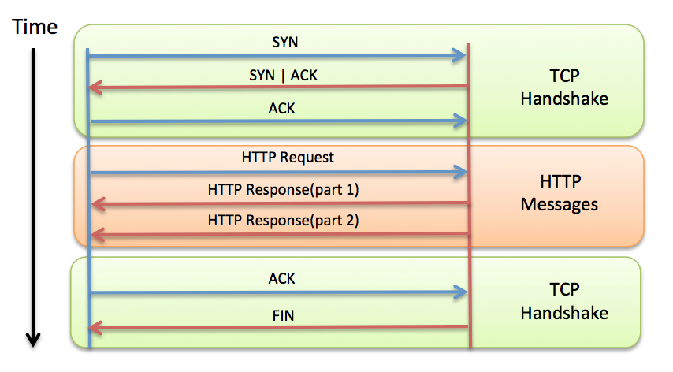Tips! Undvik onödiga HTTP-requests!
Detta gäller för en HTML-sida, en bild osv. En översiktlig del. Non-persistant (old way) prestanda: undvik onödiga requests Image maps, CSS Sprites, antal script och stilmallar
HTTP-headers
- Request, Response
- Cookie
- Form data
- Accept, Accept-encoding, Accept-charset
- Cache
- Connection
En översiktlig del. Non-persistant (old way)

HTTP Request
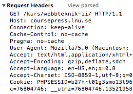
Från klienten till servern
Vad kallas översta raden, prata om den
Headers fields
HTTP Request Methods
| GET | Hämta en resurs (via URL), "read-only" |
| POST | Posta data (formulär). Skickar data från klient till server |
| HEAD | Hämta endast HTTP headern - ej ev. dokument |
| PUT | Ladda upp utpekad resurs |
| DELETE | Ta bort utpekad resurs |
| TRACE | Skicka tillbaka förfrågan precis som den kom (upptäcka ändringar på vägen) |
| OPTIONS | Får tillbaka en lista med vilka HTTP-kommandon som stöds |
| CONNECT | Används vid SSL-tunnlar |
GET och POST vanligast (betraktas som säkra)
Ofta inte stöd för andra (många tolkas som GET)
REST
HTTP Response
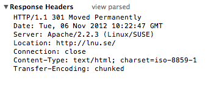
Svar från webbserver till klient
Förstora bilden?
Statuskod
| 1xx - Informational | |
| Ett provisoriskt response | 100 Continue |
| 2xx - Successful | |
|
Förfrågan gick bra, togs emot, blev förstådd och accepterad |
200 OK 204 No Content |
| 3xx - Redirections | |
| För att hitta efterfrågad resurs måste klienten utföra ett nytt anrop |
301 Moved Permanently 302 Found 304 Not Modified |
| 4xx - Client Error | |
| Något är fel i förfrågan |
400 Bad Request 401 Unauthorized 403 Forbidden 404 Not Found |
| 5xx - Server Error | |
| Något är fel på servern |
500 Internal Server Error 503 Service Unavailable |
Redirects
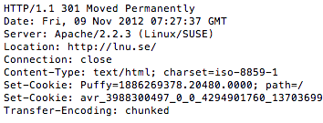 http://w3.org/QA/Tips/reback
Tips! Kan redirects undvikas, gör det!
Använd HTTP redirects (SEO, backbuttons, prestanda (skickar ej body) osv) istället för javascript os.v.
HTTP header field: Accept, Accept-encoding
Klient till server
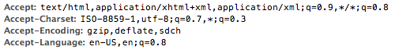
I want the resource and I want it in an HTML or XHTML format. If you cannot serve me this way, I'll take it in an XML instead. If you can't even give it to me in XML, well, I'll take anything you've got!
q => Quality Value, Viktning av hur vi vill ha saker (används?) API - REST Server MAY compress
HTTP header field: Content, Content-encoding
Server till client

Here you go! I give you javascript and it is compressed by gzip. If you're a proxy make sure to get multiple versions for the clients who doesn't support HTTP 1.1 or don't support gzip
Compression
Mindre filer, mindre nätverkstrafik, snabbare sidor?
Vanligast är gzip (GNU), andra är t.ex. deflate
HTML, XML, JSON-dokument, Script, CSS...
Komprimera ej bilder, PDF och andra redan komprimerade resurser
Tips! Testa alltid prestandan!
Snabbhet vs. storlek
Compression - Hur gör jag?
Konfigureras oftas på webbservern
I Apache görs detta i .htaccess i modulen mod_deflate
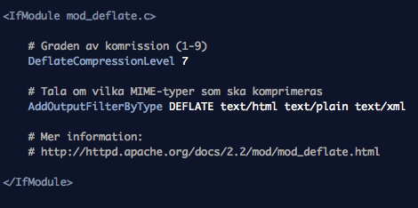
Kan styras i PHP-kod via ob_gzhandler
Finns en mod_gzip, men är lit eäldre och bökigare
HTTP och cachning!
Ett sätt att spara kopior av en resurs
på en plats närmare den som efter frågar den
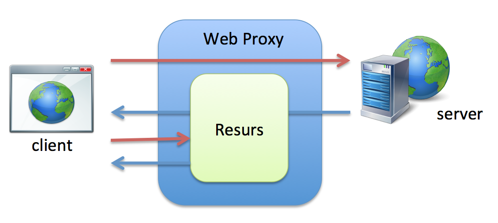
Bilder, script, css, statiska dokument
Spara kompior av ett reponse för att snabbare och effektivare presenter data vid en förfrågan Snabbare svar, mindre trafik statiska sidor vs. dynamiska snabbare och minska trafik Stale - Data som inte är uppdaterad (ej dynamiska sidor) Fräsh data
Cache och HTTP
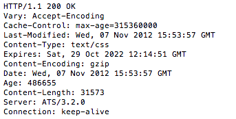
Typer av web cachning
- Browser cache
- Proxy cache
- Gateway cache - Lastbalansering, CDN
- Serverside cache
Content Delivery Network - En server nära dig!

Content Delivery Network
Hur HTTP styr cachning
- Expires
- Cache-Control
- Last-Modified, If-Modified-Since
- E-tag, If-None-Match
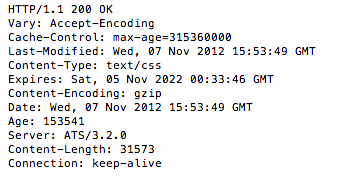
Fresh - Lita på att serverns response är giltigt
Stale - Cache:at response behöver uppdateras
Age? Hitta en bild med alla?
Expires
Kontrollerar fräschheten hos ett response mot ett HTTP datum
Om tiden gått ut görs en kontroll mot servern om nyare data finns

HTTP Date - Utgår från GMT Stort stöd Bilder och resuser som får tid långt framåt - Byt filnamn BILD Klockan - Syncproblem Lätt att glömma att man satt en tid långt fram
Cache-Control
Vanligt att man använder samtidigt som Expires.
Cache-Control prioriteras.
max-age - Antal sekunder som innehållet anses giltigt
public - Tillåts cache:as av alla
private - Tillåts endast cache-ning privat - webbläsare
no-cache - Kontrollera med servern för att få släppa cachat data
no-store - Ingen cache alls!
must-revalidate - Måste följa cache-reglerna ovan (HTTP finns specialfall)

Intruducerades med HTTP 1.1 Pragma - Stöds inte av de flesta cache
ETag - Entity Tag
Unika identifierare sätts på servern för enklare(?) validering
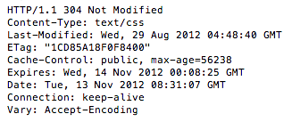
If-None-Match - Validerar på servern ifall id:t har uppdaterats
Problem vid web frms osv.
Cache - i webbservern
De flesta webbservrar har redan cachning påslagen för statiska resurser.
Kan dock ställas om i konfigurationsfiler eller verktyg.
Sätta på filnivå, filändelsenivå o.s.v.
mod_expires, modul till Apache
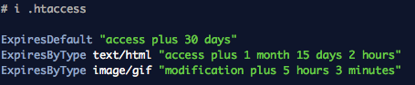
Problem vid web frms osv.
Cache - PHP
Resurser som skapats av PHP bör man vara lite försiktid med att cache:a

Problem vid web frms osv.
Tips!
Sätt lång cachetid på resurser som inte uppdateras ofta (bilder, css, script)
Om en fil som cachas ändras. Uppdatera dess filnamn på servern.
När du uppdaterar din site - flytta bara de filer som ska uppdateras
HTTPS är endast för sidor som behövs vara krypterade.
Skriv till statiska filer, slippa DB, enklare att cache:a.
Använd inte POST i onödan - Den förfrågan cache:as inte
Testa din webbplats noga! Hur är cachningen satt! Vad kan bli bättre?
Studera välbesökta webbplatser!
När du uppdaterar din site - flytta bara de filer som uppdateras (ändrar inga Last-Modified) HTTPS är endast för sidor som behövs vara säkra. Sämre prestanda och noll cache.
HTTP Connection
Hur många GET sker när du går till någon populär kvällstidningswebbplats?
453 requests! Hur fungerar det med request/response
Persistent connection
Både från klienten (om stöd finns) och server
Connection: keep-alive
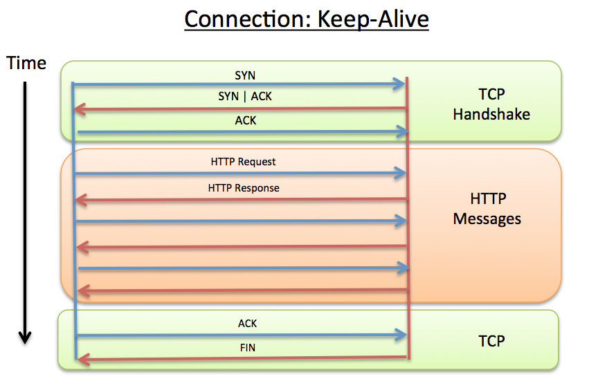
Piplined connection

Problem vid realtidsapplikationer

Smartare med längre och längre requeststider m.m. Problem med HTTP vs realtid
Lösningar för realtidswebben
Flash, Java Applet
Polling
Long polling
Forever frame
XHR Streaming
Web Sockets - Lösning på TCP-nivå
Long-Polling
En request görs men servern svarar endast när ny data finns
Simulerar att man servern pushar ut meddelanden
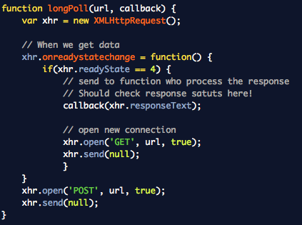
Problem att man kan bli liggande med många öppna anslutningar
Forever frame
Vanlig teknik förut.
Dold iframe med en sida som servern skickar ut javascriptkommandon till när uppdateringar finns.
Servern använder "chunked encoding" så sidan i iframen fylls på efter
hand med script som anropar "riktiga" sidan via en callback
IE måste br-tagg läggas till Safari minst 1KB,
Streaming XHR
Som long polling men du använder data så fort den kommer (chuncked)
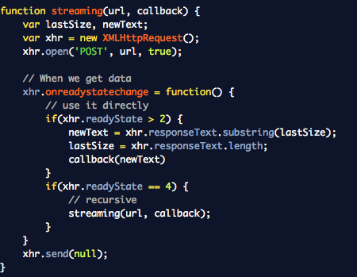
Dåligt stöd i vissa webbläsare
Web Socket
Realtids-ramverk
Enklare, har fallbacks
node.js - socket.io
Meteor.js